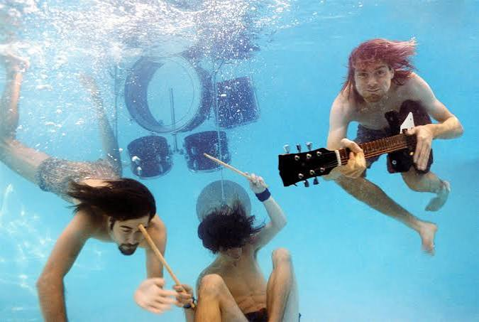

NIRVANA
O Nirvana foi uma banda de rock americana fundada em 1987 por Kurt Cobain e Krist Novoselic, com a entrada de Dave Grohl na bateria em 1990.
Eles se tornaram o maior símbolo do movimento grunge de Seattle e a voz da Geração X. O trio estourou mundialmente em 1991 com o álbum Nevermind e o hino "Smells Like Teen Spirit", popularizando o rock alternativo.
A carreira acabou tragicamente em 1994 com a morte de Cobain, mas a banda vendeu mais de 75 milhões de cópias e mudou a história da música pop.

Alice In Chains
O Alice in Chains foi uma banda de rock americana fundada em 1987 por Jerry Cantrell e Sean Kinney, destacando-se com Layne Staley nos vocais.
Eles se tornaram um dos maiores pilares do movimento grunge de Seattle, misturando o rock alternativo com o peso do heavy metal e harmonias vocais marcantes.
O grupo estourou mundialmente com os álbuns Facelift (1990) e o clássico Dirt (1992), além do aclamado acústico MTV Unplugged. Embora a formação original tenha sido interrompida tragicamente em 2002 com a morte de Staley,
a banda vendeu mais de 30 milhões de cópias e mudou a história do rock, continuando seu legado anos depois com a entrada de William DuVall.

Pearl Jam
O Pearl Jam é uma banda de rock americana fundada em 1990 por Stone Gossard e Jeff Ament, marcada pela voz icônica de Eddie Vedder.
Eles se tornaram um dos maiores fenômenos do movimento grunge de Seattle e da Geração X. O grupo estourou mundialmente em 1991 com o álbum Ten e hinos como "Alive" e "Jeremy", trazendo um rock visceral e letras de forte teor social.
Sobrevivendo às tragédias da época, a banda vendeu mais de 85 milhões de cópias e continua na ativa até hoje, consolidada como uma das mais duradouras da história do rock.